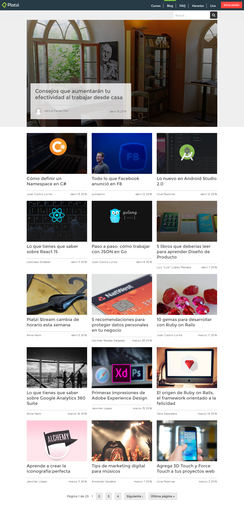

En esta página se recopilan los desafíos propuestos por el profesor Leonidas Esteban en el curso de desarrollo web online realizado en Platzi.
El primer desafío, consiste en transformar el diseño de la siguiente imagen en HTML y CSS.
 Solución al desafío #1Este desafío consiste en hacer que el footer de la página se ubique en la parte inferior, independientemente del tamaño del contenido de la página.
Solución al desafío #2 - Usando display flex Solución al desafío #2 - Usando márgenes negativos en el envoltorio del contenido Solución al desafío #2 - Usando márgenes negativos en el footer Solución al desafío #2 - Usando calc para calcular el alto del contenido Solución al desafío #2 - Usando diseño de grillasEste desafío, consiste en hacer una animación usando Hover. Esta animación debe tener una imagen de fondo que ocupe todo el tamaño de la ventana (no importa se repita) y debe tener una caja de texto centrada tanto vertical como horizontalmente. Adicionalmnete esta caja de texto debe estar rotada y no visible.
Al hacer hover sobre la página, la imagen de fondo debe aumentar su tamaño (hacer zoom) y la caja de texto con un efecto de acentuar (contrario a desvanecer), debe ir apareciendo y rotar hasta que el contenido quede en la posición correcta. Adicionalmente se debe agregar un borde al elemento padre.
Solución al desafío #3